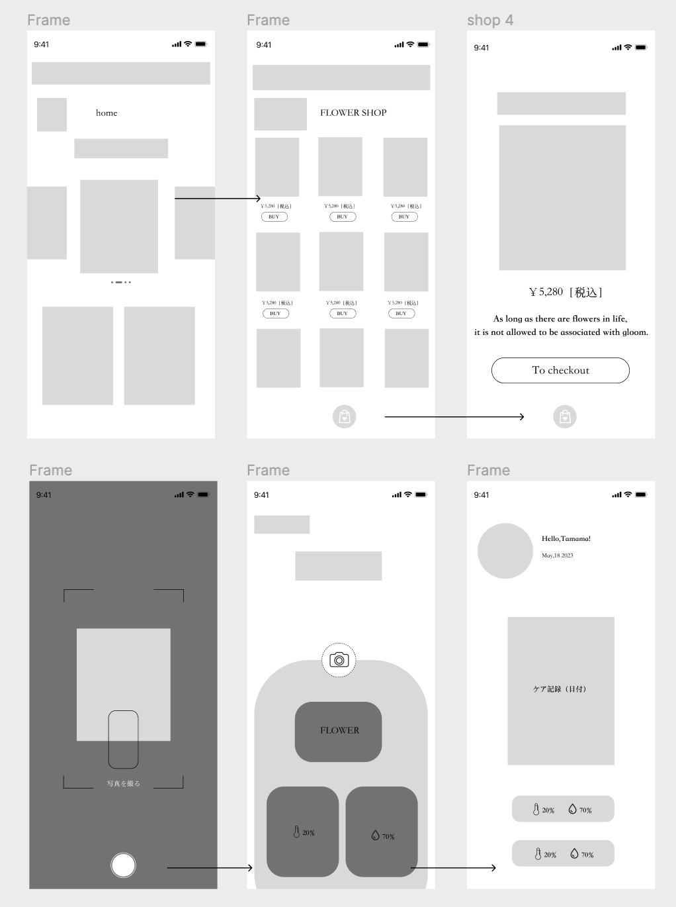

「ユーザ調査」
エミリー（Emily） 30歳
背景
エミリーは都心で働く忙しいマーケティングマネージャーです。彼女は生活を愛し、自宅やオフィスに生花を飾って空間の美しさと気分を向上させることを好みます。
ニーズ
オンラインで手軽に生花を購入し、カスタマイズする方法を探しています。同時に、これらの花を新鮮で美しい状態に保つためのケア方法を迅速に学びたいと考えています。
使用シーン
大切な祝日に親しい友人や家族へのプレゼントとして花束を選んだり、自分の生活空間に定期的に生花を購入したりします。
ジャック（Jack） 32歳
背景
ジャックはアプリ開発者で、新技術やAI機能に特に興味を持っています。彼は頻繁に生花を購入するわけではありませんが、花束を識別し、その世話のアドバイスを提供できる技術に非常に好奇心を持っています。
ニーズ
技術駆動の機能に関心があり、特にAIを使用して花を識別し、ケアガイドを提供する機能に関心があります。
使用シーン
アプリの花束識別機能を使用して、たまに受け取る花束の情報を知り、それらの世話をして花の寿命を延ばす方法を学びます。
サラ（Sara） 25歳
背景
サラはフリーランスであり、ソーシャルメディアインフルエンサーでもあります。彼女は生活の美学やDIYプロジェクトを頻繁に共有しており、ユニークでパーソナライズされた花束デザインに興味を持っています。これは、撮影スペースを飾り、写真の美しさを高めるためです。
ニーズ
個性的なカスタマイズ花束サービスを提供するアプリを探しており、唯一無二のフラワーアート作品を作成し、共有することができます。
使用シーン
特別なソーシャルメディアコンテンツの撮影のために、特徴的な花束をカスタマイズする必要があります。または、独自のクリエイティブなフラワーアートを自分で作る方法を学びます。
トム（Tom） 65歳
背景
トムは退職した教師で、現在は自分の趣味にもっと多くの時間を費やすことができます。それには園芸も含まれます。彼はフラワーデザインに興味があり、自分で花束を作る方法を学びたいと思っています。
ニーズ
サイトまたはアプリを通じてフラワーアレンジメントの技術を学び、オンラインまたはオフラインのフラワーアレンジメント講座に参加し、他のフラワーアレンジメント愛好家と交流したいと考えています。
使用シーン
空いた時間にフラワーアレンジメントのチュートリアルを閲覧したり、フラワーアレンジメントのワークショップに登録したりして、フラワーアレンジメントを新しい趣味として楽しみます。
「プロトタイプデザイン」
「デザインコンセプト」

「リフレクション/キーポイント」
「KIKU」アプリの設計過程では花の種類を識別し、適切にケアする方法を理解することの難しさ、および忙しい日常生活の中で容易に花束を購入する方法の欠如に関連しています。プロジェクトを通じて、ユーザーのニーズを理解し、それらを解決するための機能を組み込むことの重要性を再認識しました。
また、デザインとユーザーエクスペリエンスの改善は継続的なプロセスであり、ユーザーフィードバックを積極的に求め、それに基づいてアプリを進化させることが重要です。

Let’s connect!
YuXin Tian
nanaze1103@gmail.com